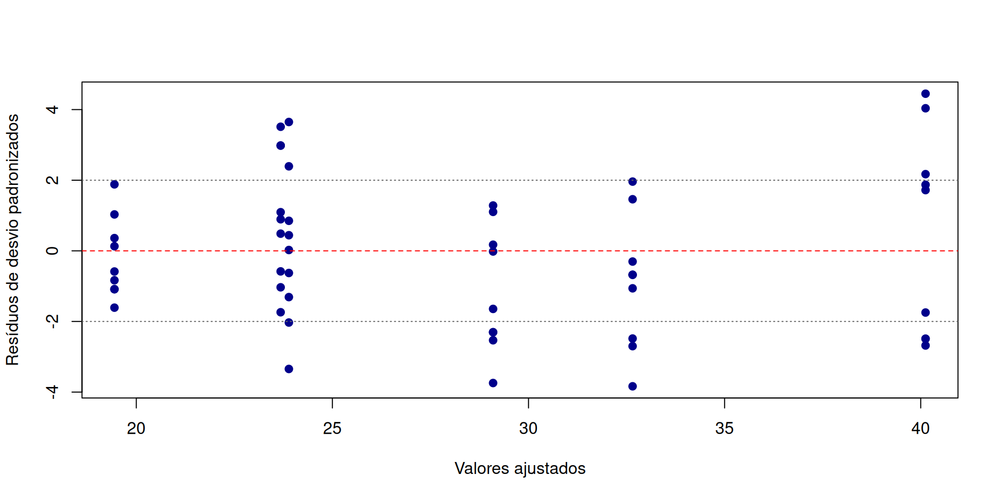
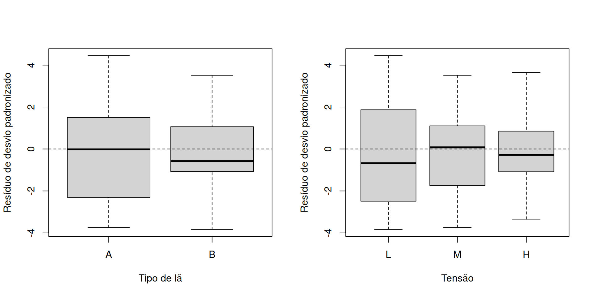
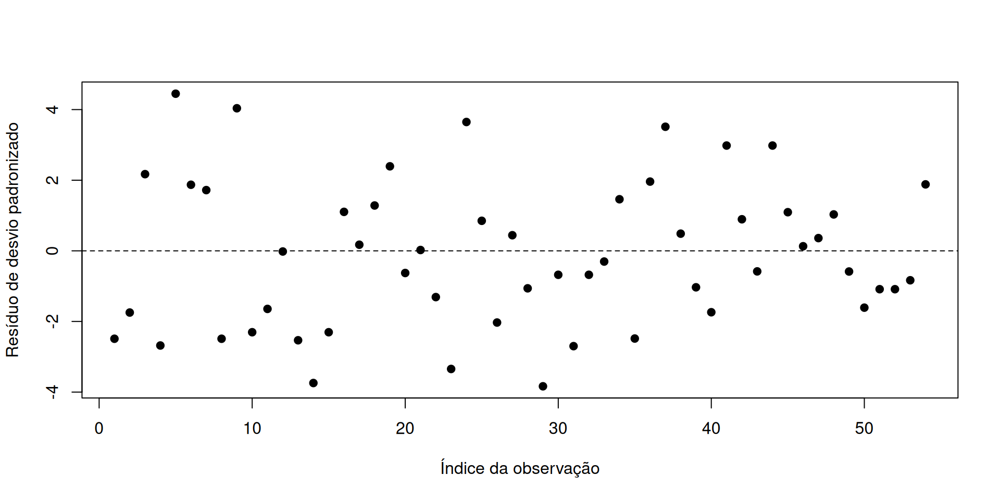
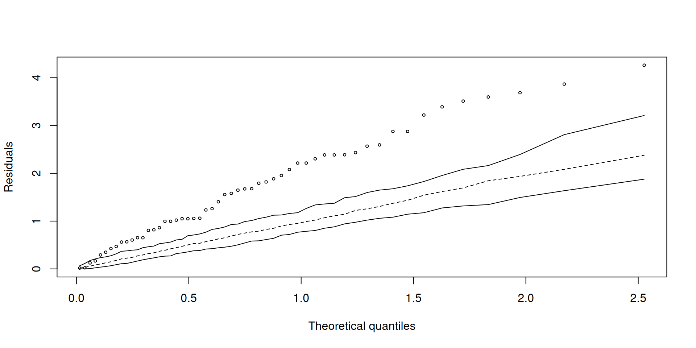

dados <- warpbreaks
modelo <- glm(
breaks ~ wool + tension,
family = poisson(link = "log"),
data = dados
)
summary(modelo)Análise de Resíduos
O modelo está bem ajustado aos dados?
ESTAT0092 – Modelos Lineares Generalizados
Prof. Dr. Sadraque E. F. Lucena
http://sadraquelucena.github.io/mlg
- O desvio mede a discrepância global do modelo, mas resumi-lo a um único número oculta falhas locais de ajuste.
- Uma medida global pode resumir o ajuste, mas não mostra quais observações o modelo tem mais dificuldade de ajustar.
- Nesta aula, vamos aprender a calcular, comparar e interpretar resíduos em modelos lineares generalizados (MLGs).
- A análise será exploratória: identificar sinais que merecem investigação, sem confundir resíduo com diagnóstico definitivo.
Por que o desvio global não basta?
- Imagine dois modelos ajustados com mesmo desvio total (\(D = 10\)):
- Modelo A: \(1\) observação concentra \(90\%\) do desvio (\(d_1 = 9\)) (indício de outlier, ponto influente ou erro de medição).
- Modelo B: \(10\) observações contribuem uniformemente com \(1\) unidade cada (Indício de subajuste geral ou omissão de preditor relevante).
- Diferença de perspectiva:
- Desvio global: Responde “quanta discrepância total o modelo acumula?”
- Resíduos: Respondem “onde a discrepância está, em qual direção e com qual padrão?”
- Observação: O desvio valida a qualidade geral do modelo, enquanto os resíduos apontam onde e como corrigir o modelo.
Exemplo: número de falhas em fios
O conjunto warpbreaks, disponível no R, registra o número de falhas (breaks) em amostras de fios, sob diferentes tipos de lã (wool) e níveis de tensão (tension).
- Resposta: contagem de falhas (
breaks) - Preditoras: tipo de lã (
wool) e tensão (tension) - Modelo inicial: regressão de Poisson com ligação log.
Ajuste do modelo no R:
Exemplo: número de falhas em fios
Call:
glm(formula = breaks ~ wool + tension, family = poisson(link = "log"),
data = dados)
Coefficients:
Estimate Std. Error z value Pr(>|z|)
(Intercept) 3.69196 0.04541 81.302 < 2e-16 ***
woolB -0.20599 0.05157 -3.994 6.49e-05 ***
tensionM -0.32132 0.06027 -5.332 9.73e-08 ***
tensionH -0.51849 0.06396 -8.107 5.21e-16 ***
---
Signif. codes: 0 '***' 0.001 '**' 0.01 '*' 0.05 '.' 0.1 ' ' 1
(Dispersion parameter for poisson family taken to be 1)
Null deviance: 297.37 on 53 degrees of freedom
Residual deviance: 210.39 on 50 degrees of freedom
AIC: 493.06
Number of Fisher Scoring iterations: 4Exemplo: número de falhas em fios
O ajuste global do modelo não está muito bom, pois \[ \frac{\texttt{Residual deviance}}{\texttt{degrees of freedom}} = \frac{210{,}39}{50} \approx 4{,}21 \quad \text{(muito maior que 1)} \] (Lembre que em um MLG bem ajustado,
Residual devianceé proximo dedegrees of freedom).Vamos comparar os números de falhas observados e os valores estimados pelo modelo.
Exemplo: número de falhas em fios
observacao wool tension observado ajustado
1 1 A L 26 40.12354
2 2 A L 30 40.12354
3 3 A L 54 40.12354
4 4 A L 25 40.12354
5 5 A L 70 40.12354
6 6 A L 52 40.12354
7 7 A L 51 40.12354
8 8 A L 26 40.12354
9 9 A L 67 40.12354
10 10 A M 18 29.09722Exemplo: número de falhas em fios
- Vamos olhar a diferença bruta \(y_i-\hat\mu_i\):
observacao wool tension observado ajustado erro_bruto
5 5 A L 70 40.12354 29.87646
9 9 A L 67 40.12354 26.87646
24 24 A H 43 23.89035 19.10965
29 29 B L 14 32.65424 -18.65424
37 37 B M 42 23.68056 18.31944
14 14 A M 12 29.09722 -17.09722
41 41 B M 39 23.68056 15.31944
44 44 B M 39 23.68056 15.31944
4 4 A L 25 40.12354 -15.12354
1 1 A L 26 40.12354 -14.12354- Essa diferença é ótima para explicar o erro no mundo real (ex.: “o modelo errou por 5 falhas no fio”), mas não serve para comparar observações do ponto de vista estatístico, pois a variância muda de acordo com a média na Poisson.
Exemplo: número de falhas em fios
Como o erro bruto engana, algumas métricas ajustadas podem ser utilizadas, cada uma com um papel específico:
observado ajustado erro_bruto r_resposta r_pearson r_desvio t_desvio
1 26 40.12354 -14.12354 -14.12354 -2.229687 -2.384536 -2.489762
2 30 40.12354 -10.12354 -10.12354 -1.598206 -1.673658 -1.747513
3 54 40.12354 13.87646 13.87646 2.190681 2.079744 2.171519
4 25 40.12354 -15.12354 -15.12354 -2.387557 -2.567627 -2.680932
5 70 40.12354 29.87646 29.87646 4.716606 4.261639 4.449698
6 52 40.12354 11.87646 11.87646 1.874940 1.792277 1.871367
7 51 40.12354 10.87646 10.87646 1.717070 1.647134 1.719819
8 26 40.12354 -14.12354 -14.12354 -2.229687 -2.384536 -2.489762
9 67 40.12354 26.87646 26.87646 4.242995 3.866888 4.037528
10 18 29.09722 -11.09722 -11.09722 -2.057257 -2.214653 -2.304977Exemplo: número de falhas em fios
r_resposta(resíduo de resposta): O erro simples na escala original (\(y_i - \hat{\mu}_i\)).r_pearson(resíduo de Pearson): O erro simples ponderado pelo desvio padrão esperado da observação.r_desvio(Resíduo componente do desvio): A contribuição de cada ponto para a verossimilhança (o “desvio” do modelo).t_desvio(Resíduo componente do desvio padronizado): O resíduo do desvio ajustado pela alavancagem (leverage), que leva em conta a influência daquela observação no ajuste.
Resíduo de resposta
- O resíduo de resposta é a diferença bruta entre o valor observado \(y_i\) e a média estimada \(\hat{\mu}_i\): \[e_i=y_i-\hat\mu_i.\]
- \(e_i>0\): observado acima do ajustado; o modelo subestimou a resposta;
- \(e_i<0\): observado abaixo do ajustado; o modelo superestimou a resposta;
- \(e_i=0\): observado igual ao ajustado.
- É fácil interpretar na unidade original, mas não ajusta a diferença pela variabilidade esperada.
Por que a diferença bruta não basta?
Em um MLG, a variância condicional depende da média estimada: \[ Var(Y_i\mid x_i)=\phi V(\mu_i), \] em que \(V(\mu_i)\) é a função de variância e \(\phi\) é o parâmetro de dispersão.
A diferença observada \(-\) ajustada precisa ser ponderada pela variabilidade esperada.
- Um mesmo erro de \(+5\) unidades é gigantesco se \(Var(Y) = 2\), mas irrisório se \(Var(Y) = 500\).
Exemplos:
- Poisson: \(V(\mu) = \mu\) (a variância cresce linearmente com a média) e \(\phi = 1\).
- Binomial: \(V(\mu) = \mu(1 - \mu)\) e \(\phi = 1\).
- Outras famílias possuem convenções e funções de variância próprias.
Resíduo de Pearson
O resíduo de Pearson padroniza a diferença bruta dividindo-a pelo desvio-padrão teórico vindo da função de variância: \[ r_{Pi}=\frac{y_i-\hat\mu_i}{\sqrt{V(\hat\mu_i)}} \]
Ele mede a discrepância em unidades do desvio-padrão da resposta.
Em modelos com parâmetro de escala \(\phi\) (Gama, Normal Inversa), o denominador pode incluir a dispersão estimada: \(\sqrt{\hat{\phi} V(\hat{\mu}_i)}\).
No R: O comando
residuals(modelo, type = "pearson")aplica a convenção da família escolhida (ex.: em Poisson, assume \(\phi = 1\)).
Resíduo de Pearson
| Distribuição | Função de variância \(V(\mu)\) | Resíduo de Pearson usual |
|---|---|---|
| Normal com variância unitária | \(1\) | \(y_i-\hat\mu_i\) |
| Poisson | \(\mu_i\) | \((y_i-\hat\mu_i)/\sqrt{\hat\mu_i}\) |
| Bernoulli | \(\mu_i(1-\mu_i)\) | \((y_i-\hat\mu_i)/\sqrt{\hat\mu_i(1-\hat\mu_i)}\) |
| Gama | \(\mu_i^2\) | \((y_i-\hat\mu_i)/\hat\mu_i\) |
- Na Gama, como \(V(\mu) = \mu^2\), a raiz resulta em \(\hat{\mu}_i\). O resíduo torna-se o erro relativo da observação.
- Nota: As fórmulas acima consideram a convenção teórica de \(V(\mu)\). O parâmetro de dispersão \(\phi\), se presente, pode ser tratado separadamente.
Resíduo componente do desvio
O desvio compara a log-verossimilhança do modelo ajustado com a do modelo saturado.
Cada observação tem uma contribuição \(d_i^2\) para essa discrepância total: \[ r_{Di}=\operatorname{sign}(y_i-\hat\mu_i)\sqrt{d_i^2} \]
Mede o peso individual da observação no desvio total do modelo.
O sinal informa a direção do erro:
- Positivo (\(y_i > \hat{\mu}_i\)): o modelo subestimou a resposta.
- Negativo (\(y_i < \hat{\mu}_i\)): o modelo superestimou a resposta.
Resíduo de desvio na Poisson
Para uma resposta de contagem com distribuição de Poisson, a contribuição individual ao desvio é: \[ d_i^2= 2\left[ \ell(y_i) - \ell(\widehat\mu_i) \right] = 2\left[y_i\log\left(\frac{y_i}{\widehat\mu_i}\right)-y_i+\widehat\mu_i\right] \]
Substituindo na expressão do resíduo componente do desvio:
\[ r_{Di}=\operatorname{sign}(y_i-\hat\mu_i)\sqrt{2\left[y_i\log\left(\frac{y_i}{\hat\mu_i}\right)-y_i+\hat\mu_i\right]}. \]
- Quando \(y_i=0\), define-se \(y_i\log(y_i/\hat\mu_i)=0\) por continuidade.
Relação entre resíduo de desvio e desvio global
- A soma dos quadrados dos resíduos componentes do desvio é exatamente o Desvio Residual Total (\(D\)):
\[ D(y;\hat\mu)=\sum_{i=1}^{n}r_{Di}^{2} \]
- Assim, \(r_{Di}^2\) é a contribuição da observação \(i\) ao desvio.
Pearson × componente do desvio
| Aspecto | Pearson | Componente do desvio |
|---|---|---|
| Escala | Função de variância | Contribuição ao desvio |
| Direção da discrepância | Sim | Sim |
| Soma dos quadrados é o desvio | Não, em geral | Sim |
| Uso | Discrepância relativa à variância | Discrepância na escala da verossimilhança |
- Não existe um único tipo de resíduo que responda a todas as perguntas.
- Comparar medidas pode ajudar a entender a natureza da discrepância.
Resíduos padronizados
\(r_P\) e \(r_D\) ajustam o erro pela variação da média (\(\mu_i\)), mas ignoram a posição do ponto no espaço dos preditores (\(x_i\)).
Podemos então ponderar esses resíduos pela medida de alavancagem \(h_i\), que é o \(i\)-ésimo elemento da diagonal da matriz chapéu ponderada (\(0\leq h_i \leq 1\)), e mede o quão distante uma observação está quando compardos os davlores dos preditores.
O resíduo padronizado divide o resíduo (Pearson ou Desvio) pelo seu desvio-padrão estimado, que inclui a alavancagem: \[ r_i^* = \frac{r_i}{\sqrt{\phi(1 - h_i)}} \]
No R:
rstandard(modelo, type = "deviance")outype = "pearson".
Obtendo resíduos no R
residuals(..., type = "response"): diferença na escala da respostatype = "pearson": resíduo de Pearsontype = "deviance": componente do desviorstandard(): versão padronizada disponível para o modelo
Voltando ao exemplo
residuos <- data.frame(
observacao = seq_len(nrow(dados)),
observado = dados$breaks,
ajustado = fitted(modelo),
resposta = residuals(modelo, type = "response"),
pearson = residuals(modelo, type = "pearson"),
desvio = residuals(modelo, type = "deviance"),
pearson_pad = rstandard(modelo, type = "pearson"),
desvio_pad = rstandard(modelo, type = "deviance")
)
head(residuos[,-1]) observado ajustado resposta pearson desvio pearson_pad desvio_pad
1 26 40.12354 -14.12354 -2.229687 -2.384536 -2.328079 -2.489762
2 30 40.12354 -10.12354 -1.598206 -1.673658 -1.668732 -1.747513
3 54 40.12354 13.87646 2.190681 2.079744 2.287352 2.171519
4 25 40.12354 -15.12354 -2.387557 -2.567627 -2.492916 -2.680932
5 70 40.12354 29.87646 4.716606 4.261639 4.924741 4.449698
6 52 40.12354 11.87646 1.874940 1.792277 1.957678 1.871367Voltando ao exemplo
desvio_glm soma_quadrados_componentes
210.3919 210.3919 - Os resultados coincidem.
Voltando ao exemplo
- Localizando as maiores discrepâncias padronizadas:
observado ajustado resposta pearson desvio pearson_pad desvio_pad
5 70 40.12354 29.87646 4.716606 4.261639 4.924741 4.449698
9 67 40.12354 26.87646 4.242995 3.866888 4.430231 4.037528
29 14 32.65424 -18.65424 -3.264433 -3.687112 -3.396493 -3.836271
14 12 29.09722 -17.09722 -3.169566 -3.596773 -3.298834 -3.743465
24 43 23.89035 19.10965 3.909682 3.510711 4.063005 3.648388- A ordenação é um mecanismo de triagem, não uma regra de exclusão.
- Para cada observação destacada, volte às variáveis originais e pergunte: o registro é plausível? Há uma condição experimental diferente? A discrepância é parte da variabilidade esperada ou sugere uma estrutura que o modelo não capturou?
Avliação gráfia dos resíduos
A avaliação do ajuste em MLGs é predominantemente exploratória e se beneficia da inspeção visual.
Enquanto testes formais fornecem apenas uma decisão sumarizada (sim/não), os gráficos revelam a natureza, a direção e a localização das falhas de especificação.
Principais gráficos utilizados:
- Resíduos vs. Valores Ajustados (\(\hat{\mu}\)): avalia a estrutura de média, a função de ligação e a estabilidade da variância.
- Resíduos vs. Variáveis Preditoras (\(X\)): identifica não-linearidades ou termos omitidos.
- Resíduos vs. Ordem de Coleta: detecta autocorrelação ou tendências temporais/lote.
- Envelope Simulado (Meio-Normal): valida a qualidade global do ajuste em relação ao padrão esperado sob a família adotada.
Gráfico 1: Resíduos padronizados vs. Ajustados
- Objetivo: investigar possíveis inadequações na estrutura de média e variância do modelo.
- Nuvem sem padrão claro: ausência de sinal evidente nesse gráfico, não prova de que o modelo está correto.
- Curvatura ou tendência: possível inadequação da forma funcional das preditoras, da função de ligação ou omissão de variáveis relevantes.
- Dispersão que muda com valores os ajustados: investigar se o padrão é compatível com a função de variância especificada e se há sobredispersão ou estrutura não representada pelo modelo.
- Pontos isolados: observações que merecem investigação, sem concluir automaticamente que sejam erros ou influentes.
- As linhas em \(-2\) e \(2\) são referências exploratórias, não limites universais.
Gráfico 1: Resíduos padronizados vs. Ajustados

Gráfico 2: Resíduos vs. Variáveis Preditoras
- Objetivo: Vinvestigar padrões residuais associados às preditoras que possam indicar inadequação da especificação do modelo.
- Como interpretar:
- Preditoras categóricas (Boxplots): diferenças sistemáticas na localização dos resíduos entre categorias podem sugerir efeitos não representados, variáveis omitidas ou interações que mereçam investigação. Dispersões muito distintas entre grupos podem indicar heterogeneidade não explicada.
- Preditoras numéricas (gráfico de dispersão): curvaturas ou tendências sistemáticas podem indicar forma funcional inadequada. Uma alternativa é investigar termos quadráticos (\(\beta x^2\)) ou outras formas funcionais justificadas.
Gráfico 2: Resíduos vs. Variáveis Preditoras

Gráfico 3: Resíduos vs. Ordem
Atenção: interprete este gráfico somente quando a ordem das observações tiver significado, como tempo, lote ou sequência de medição.
Sinais de alerta:
- Sequências prolongadas de resíduos com o mesmo sinal: podem indicar dependência temporal, tendência não modelada ou outra estrutura sistemática.
- Saltos de patamar: podem sugerir mudança no processo, descalibração do equipamento, alteração do procedimento de coleta ou mudança nas condições experimentais.
Conduta: investigar a origem da dependência. Para dados agrupados ou medidas repetidas, considerar modelos mistos generalizados (GLMMs). Para dependência temporal, avaliar modelos com estrutura de correlação autorregressiva, como AR(1), ou modelos específicos de séries temporais.
Gráfico 3: Resíduos vs. Ordem

Gráfico 4: Envelope Simulado (Meio-Normal)
O gráfico meio-normal com envelope de Monte Carlo gera bandas de confiança empíricas para os resíduos, superando a limitação de que em MLGs os resíduos não possuem distribuição Normal exata.
Interpretação:
- Pontos dentro da banda: o padrão residual é totalmente compatível com o modelo teórico ajustado.
- Pontos fora da banda ou tendência de fuga: indicam más especificações globais ou presença de outliers severos.
Gráfico 4: Envelope Simulado (Meio-Normal)
Poisson model 
Qual gráfico responde a qual pergunta?
| Pergunta | Gráfico | Sinal a investigar |
|---|---|---|
| Há discrepâncias individuais? | Resíduos padronizados | Posições muito além das faixas \([-2, 2]\) |
| O ajuste muda com a média? | Resíduos × ajustados | Curvatura, tendência ou funil |
| Alguma preditora parece mal especificada? | Resíduos × preditora | Curvatura ou diferenças entre categorias |
| Há estrutura na ordem? | Resíduos × índice ordenado | Tendência, ciclos ou sequências |
| O padrão residual é compatível com o modelo? | Meio-normal com envelope simulado | Muitos pontos fora do envelope |
Roteiro Prático para Análise de Resíduos
- Ajustar e Comparar: Ajuste o MLG inicial e faça um primeiro confronto visual entre valores observados (\(y_i\)) e ajustados (\(\hat{\mu}_i\)).
- Calcular Métricas: Extraia os resíduos de resposta, Pearson (\(r_{Pi}\)) e componente do desvio (\(r_{Di}\)).
- Padronizar e Filtrar: Calcule os resíduos padronizados (\(r_{Di}^*\)) para ajustar pela alavancagem (\(h_i\)) e selecione observações atípicas para investigação.
- Avaliar Graficamente: Explore gráficos de resíduos contra valores ajustados e contra as variáveis preditoras (\(X\)).
- Validar Estrutura: Aplique gráficos de ordem temporal (se houver sequência) e envelopes simulados (
hnp) para verificar a calibração do modelo. - Investigar e Agir: Registre hipóteses sobre causas de más especificações; jamais elimine observações atípicas sem confirmação de erro de dados ou motivação substantiva do domínio.
Exercício
No conjunto warpbreaks:
- Tente ajustar um modelo de Poisson com outras funções de ligação disponíveis na função
glm. - Avalie o AIC dos modelos e compare o envelope simulado.
- Ajuste um modelo com distribuição binomial negativa (função
glm.nbdo pacoteMASS), avalie o AIC e o envelope simulado.
Próxima aula: diagnóstico de MLGs
- Na próxima aula, vamos combinar evidências residuais com alavancagem, influência, forma funcional, distribuição, função de ligação e análise de sensibilidade para decidir o que investigar e como avaliar a robustez do modelo.
Fim